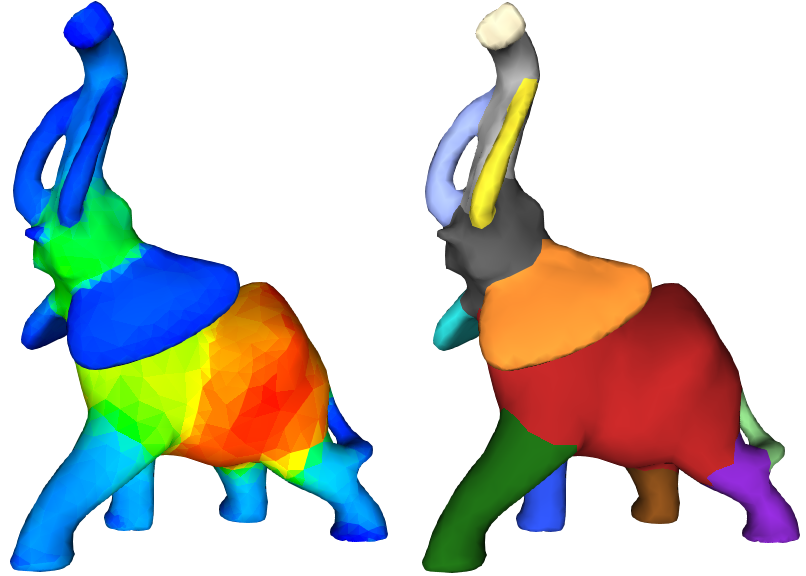
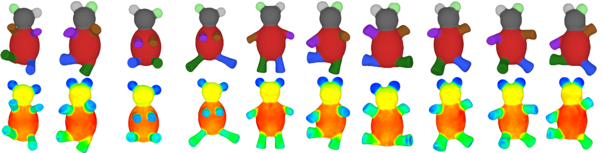
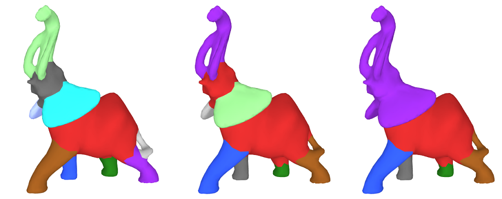
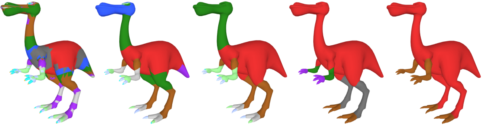
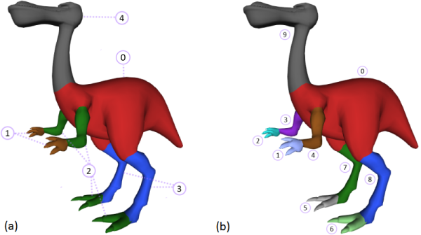

- Author
- Ilker O. Yaz and Sébastien Loriot

Introduction
Mesh segmentation is the process of decomposing a mesh into smaller and meaningful sub-meshes. This process is used in applications such as modeling, rigging, texturing, shape-retrieval, deformation ... We refer to a comprehensive survey on mesh segmentation [3] for different segmentation techniques.
This package provides an implementation of the algorithm relying on the Shape Diameter Function [4] (SDF). Given a triangulated surface mesh (simply mesh in the following) bounding a 3D solid object, the SDF provides an estimate of the local object diameter for each facet of the mesh (the SDF values). The segmentation algorithm first applies a soft clustering on the facets using the associated SDF values. The final segmentation is then obtained via a graph-cut algorithm that considers surface-based features (dihedral-angle and concavity) together with the result of the soft clustering.
This package offers the computation of the SDF values and the mesh segmentation result as independent functions. This allows an alternative implementation of the SDF to be directly plugged into the segmentation algorithm, and also to reuse the SDF values several times with different parameters for the segmentation algorithm.
Overview of the Segmentation Process
Shape Diameter Function
The Shape Diameter Function provides a connection between the surface mesh and the volume of the subtended 3D bounded object. More specifically, the SDF is a scalar-valued function defined on facets of the mesh that measures the corresponding local object diameter. The SDF is used to distinguish between thin and thick parts by adding a local notion of thickness to the facets. In addition, the SDF is pose-invariant: SDF values remain largely unaffected after changes of pose (see Figure 63.2).

Computing Raw SDF Values
For a given input mesh, the raw SDF values are computed by processing each facet one by one. For each facet, several rays are sampled in a cone constructed using the centroid of the facet as apex and inward-normal of the facet as axis. Each ray is truncated into a segment, its endpoints being the apex of the cone and the first mesh facet intersection point. Using the lengths of these truncated rays, which intuitively correspond to a local volume sampling, the raw SDF value is computed by first applying an outlier removal procedure and then taking the average of the lengths.
The raw SDF values are computed through function sdf_values(), setting postprocess to false.
- Note
- This package also accepts input meshes with holes. In such a case, rays that can not be truncated to segments, or rays that form an obtuse angle with the inward-normal of the first intersected facet are ignored. Only facets having no ray get no raw SDF values
Post-processing of Raw SDF Values
After having calculated the raw SDF value for each facet, the SDF values used in the segmentation algorithm are the result of several post-processing steps:
- Facets with no raw SDF values are assigned the average raw SDF value of their edge-adjacent neighbors. If there is still a facet having no SDF value, the minimum amongst all the SDF values is assigned to it (this is a deviation from the description of the algorithm in [4]). The main reason for not assigning 0 to facets with no SDF values is that it can obstruct log-normalization process done at the beginning of
segmentation_from_sdf_values().
A bilateral smoothing [5] is applied. This smoothing technique removes the noise while trying to keep fast changes on SDF values unchanged since they are natural candidates for segment boundaries. The bilateral smoothing [5] has three parameters that are set as follows:
- \( w = \lfloor\sqrt{ |F| / 2000}\rfloor + 1 \), the window size (i.e. maximum level for breadth-first neighbor selection), where \( F \) denotes the set of facets
- \( \sigma_s = w / 2 \), the spatial parameter
- \( \sigma_{r_i} = \sqrt{1/|w_i| \sum_{f_j \in w_i}(SDF(f_j) - SDF(f_i))^2} \), the range parameter set for each facet \( f_i \); \( w_i \) denotes the set of neighboring facets of \( f_i \) collected using \( w \) in the facet neighbor breadth-first search
Large window sizes are more effective at eliminating noise but may over-smooth SDF values along segment boundaries. Large range parameters make smoothing closer to Gaussian smoothing and may also lead to over-smoothed SDF values.
- SDF values are linearly normalized between [0,1].
These post-processing steps can be applied to raw SDF values (or an alternative set of similar scalar values associated with facets) using the function sdf_values_postprocessing().
Soft Clustering
Given a number \( k \) of clusters, the soft clustering is a Gaussian mixture model that consists in fitting \( k \) Gaussian distributions to the distribution of the SDF values of the facets. It is initialized with k-means++ [1], and run multiple times with random seeds. Among these runs, the best result is used for initializing the expectation-maximization algorithm for fitting the Gaussian distributions.
- Note
- There is no direct relationship between the number of clusters (parameter for soft clustering) and the final number of segments. Intuitively, the number of clusters represents the number of levels of a segmentation by clustering facets that have close SDF values without considering their connectivity. However, a large number of clusters is likely to result in detailed segmentation of the mesh with a large number of segments, see Figure 63.3.

The output of this procedure is a matrix that contains probability values for each facet to belong to each cluster. These probability values are used as input to the hard clustering.
Hard clustering
The hard clustering yields the final segmentation of the input mesh and results from minimizing an energy function combining the aforementioned probability matrix and geometric surface features.
The energy function minimized using alpha-expansion graph cut algorithm [2] is defined as follows:
\( E(\bar{x}) = \sum\limits_{f \in F} e_1(f, x_f) + \lambda \sum\limits_{ \{f,g\} \in N} e_2(x_f, x_g) \)
\( e_1(f, x_f) = -log(max(P(f|x_f), \epsilon)) \)
\( e_2(x_f, x_g) = \left \{ \begin{array}{rl} -log(\theta(f,g)/\pi) &\mbox{ $x_f \ne x_g$} \\ 0 &\mbox{ $x_f = x_g$} \end{array} \right \} \)
| where:
- \(F\) denotes the set of facets,
- \(N\) denotes the set of pairs of neighboring facets,
- \(x_f\) denotes the cluster assigned to facet \(f\),
- \(P(f|x_p)\) denotes the probability of assigning facet \(f\) to cluster \(x_p\),
- \(\theta(f,g)\) denotes the dihedral angle between neighboring facets \(f\) and \(g\): concave angles and convex angles are weighted by 1 and 0.1 respectively,
- \(\epsilon\) denotes the minimal probability threshold,
- \(\lambda \in [0,1]\) denotes a smoothness parameter.
|
The first term of the energy function provides the contribution of the soft clustering probabilities. The second term of the energy function is a geometric criterion that is larger when two adjacent facets sharing a sharp and concave edge are in the same cluster. The smoothness parameter makes this geometric criteria more or less prevalent.
Assigning a high value to the smoothness parameter results in a small number of segments (since constructing a segment boundary would be expensive). In other words, merging facets that are placed under different clusters is less expensive than separating them and creating boundaries. On the contrary, assigning smaller values to smoothness parameter results in a high number of segments, by getting closer to the result of the soft clustering (notice that setting \( \lambda=0 \) provides the result of the soft clustering). Figure 63.4 depicts the influence of the smoothness parameter.

The hard clustering assigns a cluster id to each facet (see Figure 63.5 (a)). A segment consists in a set of connected facets in the same cluster (see Figure 63.5 (b)). By default the function segmentation_from_sdf_values() assigns to each facet the id of its segment. It assigns to each facet the id of its cluster when output_cluster_ids is set to true.

Summary
Four functions are provided:
sdf_values() : computes the SDF value of each facet of an input mesh in either raw or post-processed form. SDF values are associated to facets using a property map (see CGAL and Boost Property Maps).sdf_values_postprocessing() : post-processes raw SDF values. The post-processing is decoupled from the function sdf_values() to allow the use of alternative methods to compute SDF values or additional post-processing step.segmentation_from_sdf_values() : computes the mesh segmentation from the SDF values of the facets of an input mesh. The input SDF values can be any set of scalar values associated to each facet as long as they have been normalized between 0 and 1. This function allows using the same SDF values with different parameters for the segmentation stage. The segment or cluster ids are associated to the facets using a property map.segmentation_via_sdf_values() : combines the three functions above.
These functions expect as input a triangulated surface mesh bounding a 3D solid object, with the following properties:
- Combinatorially 2-manifold;
- The vertices of the facets are oriented counterclockwise when seen from outside of the object;
- Intersection-free;
- Boundary free.
- Note
- The current implementation executes fine on meshes that do not match some of these properties but may produce unreliable or meaningless segmentations.
The current implementation of the computation of the SDF values relies on the 3D Fast Intersection and Distance Computation package. This operation is reliable when the AABBTraits model provided has exact predicates. CGAL::Exact_predicates_inexact_constructions_kernel is recommended as geometric traits for this algorithm.
Examples
Example: Computation of SDF Values
File Surface_mesh_segmentation/sdf_values_example.cpp
#include <CGAL/Exact_predicates_inexact_constructions_kernel.h>
#include <CGAL/Polyhedron_3.h>
#include <CGAL/mesh_segmentation.h>
#include <CGAL/property_map.h>
#include <iostream>
#include <fstream>
typedef CGAL::Polyhedron_3<Kernel> Polyhedron;
int main()
{
Polyhedron mesh;
std::ifstream input("data/cactus.off");
std::cerr << "Input is not a triangle mesh" << std::endl;
return EXIT_FAILURE;
}
typedef std::map<Polyhedron::Facet_const_handle, double> Facet_double_map;
Facet_double_map internal_map;
boost::associative_property_map<Facet_double_map> sdf_property_map(internal_map);
std::pair<double, double> min_max_sdf =
CGAL::sdf_values(mesh, sdf_property_map);
std::cout << "minimum SDF: " << min_max_sdf.first
<< " maximum SDF: " << min_max_sdf.second << std::endl;
for(Polyhedron::Facet_const_iterator facet_it = mesh.facets_begin();
facet_it != mesh.facets_end(); ++facet_it) {
std::cout << sdf_property_map[facet_it] << " ";
}
std::cout << std::endl;
return EXIT_SUCCESS;
}
Example: Segmentation from SDF Values
File Surface_mesh_segmentation/segmentation_from_sdf_values_example.cpp
#include <CGAL/Exact_predicates_inexact_constructions_kernel.h>
#include <CGAL/Polyhedron_3.h>
#include <CGAL/mesh_segmentation.h>
#include <CGAL/property_map.h>
#include <iostream>
#include <fstream>
typedef CGAL::Polyhedron_3<Kernel> Polyhedron;
int main()
{
Polyhedron mesh;
std::ifstream input("data/cactus.off");
std::cerr << "Input is not a triangle mesh." << std::endl;
return EXIT_FAILURE;
}
typedef std::map<Polyhedron::Facet_const_handle, double> Facet_double_map;
Facet_double_map internal_sdf_map;
boost::associative_property_map<Facet_double_map> sdf_property_map(internal_sdf_map);
typedef std::map<Polyhedron::Facet_const_handle, std::size_t> Facet_int_map;
Facet_int_map internal_segment_map;
boost::associative_property_map<Facet_int_map> segment_property_map(internal_segment_map);
std::cout << "Number of segments: " << number_of_segments << std::endl;
for(Polyhedron::Facet_const_iterator facet_it = mesh.facets_begin();
facet_it != mesh.facets_end(); ++facet_it) {
std::cout << segment_property_map[facet_it] << " ";
}
std::cout << std::endl;
const std::size_t number_of_clusters = 4;
const double smoothing_lambda = 0.3;
mesh, sdf_property_map, segment_property_map, number_of_clusters, smoothing_lambda);
return EXIT_SUCCESS;
}
Computation of SDF Values and Segmentation
The function segmentation_via_sdf_values() combines the computation of sdf values, the post-processing and the segmentation. Note that when computing several segmentations of a mesh with different parameters (i.e. number of levels, and smoothing lambda), it is advised to first compute the SDF values using sdf_values() and use them in calls of the function segmentation_from_sdf_values().
File Surface_mesh_segmentation/segmentation_via_sdf_values_example.cpp
#include <CGAL/Exact_predicates_inexact_constructions_kernel.h>
#include <CGAL/Polyhedron_3.h>
#include <CGAL/mesh_segmentation.h>
#include <CGAL/property_map.h>
#include <iostream>
#include <fstream>
typedef CGAL::Polyhedron_3<Kernel> Polyhedron;
int main()
{
Polyhedron mesh;
std::ifstream input("data/cactus.off");
std::cerr << "Input is not a triangle mesh" << std::endl;
return EXIT_FAILURE;
}
typedef std::map<Polyhedron::Facet_const_handle, std::size_t> Facet_int_map;
Facet_int_map internal_segment_map;
boost::associative_property_map<Facet_int_map> segment_property_map(internal_segment_map);
std::cout << "Number of segments: " << number_of_segments << std::endl;
for(Polyhedron::Facet_const_iterator facet_it = mesh.facets_begin();
facet_it != mesh.facets_end(); ++facet_it) {
std::cout << segment_property_map[facet_it] << " ";
}
std::cout << std::endl;
return EXIT_SUCCESS;
}
Using a Polyhedron with an ID per Facet
The previous examples use a std::map as property maps for storing the SDF values and the segmentation results. This example uses a polyhedron type with a facet type storing an extra ID field, together with a vector, as underlying data structure in the property maps. The main advantage is to decrease from log to constant the complexity for accessing the data associated to facets.
File Surface_mesh_segmentation/segmentation_with_facet_ids_example.cpp
#include <CGAL/Exact_predicates_inexact_constructions_kernel.h>
#include <CGAL/Polyhedron_items_with_id_3.h>
#include <CGAL/Polyhedron_3.h>
#include <CGAL/mesh_segmentation.h>
#include <CGAL/property_map.h>
#include <iostream>
#include <fstream>
typedef CGAL::Polyhedron_3<K, CGAL::Polyhedron_items_with_id_3> Polyhedron;
template<class ValueType>
struct Facet_with_id_pmap
: public boost::put_get_helper<ValueType&,
Facet_with_id_pmap<ValueType> >
{
typedef Polyhedron::Facet_const_handle key_type;
typedef ValueType value_type;
typedef value_type& reference;
typedef boost::lvalue_property_map_tag category;
Facet_with_id_pmap(
std::vector<ValueType>& internal_vector
) : internal_vector(internal_vector) { }
reference operator[](key_type key) const
{ return internal_vector[key->id()]; }
private:
std::vector<ValueType>& internal_vector;
};
int main()
{
Polyhedron mesh;
std::ifstream input("data/cactus.off");
std::cerr << "Input is not a triangle mesh" << std::endl;
return EXIT_FAILURE;
}
std::size_t facet_id = 0;
for(Polyhedron::Facet_iterator facet_it = mesh.facets_begin();
facet_it != mesh.facets_end(); ++facet_it, ++facet_id) {
facet_it->id() = facet_id;
}
std::vector<double>
sdf_values(mesh.size_of_facets());
Facet_with_id_pmap<double> sdf_property_map(
sdf_values);
for(Polyhedron::Facet_const_iterator facet_it = mesh.facets_begin();
facet_it != mesh.facets_end(); ++facet_it) {
std::cout << sdf_property_map[facet_it] << " ";
}
std::cout << std::endl;
std::vector<std::size_t> segment_ids(mesh.size_of_facets());
Facet_with_id_pmap<std::size_t> segment_property_map(segment_ids);
for(Polyhedron::Facet_const_iterator facet_it = mesh.facets_begin();
facet_it != mesh.facets_end(); ++facet_it) {
std::cout << segment_property_map[facet_it] << " ";
}
std::cout << std::endl;
return EXIT_SUCCESS;
}
Using a Surface_mesh
When using a Surface_mesh, you can use the built-in property mechanism.
File Surface_mesh_segmentation/segmentation_from_sdf_values_SM_example.cpp
#include <CGAL/Exact_predicates_inexact_constructions_kernel.h>
#include <CGAL/Surface_mesh.h>
#include <CGAL/mesh_segmentation.h>
#include <CGAL/property_map.h>
#include <iostream>
#include <fstream>
typedef boost::graph_traits<Mesh>::vertex_descriptor vertex_descriptor;
typedef boost::graph_traits<Mesh>::face_descriptor face_descriptor;
typedef boost::graph_traits<Mesh>::face_iterator face_iterator;
int main(int argc, char** argv )
{
Mesh mesh;
if (argc==2){
std::ifstream input(argv[1]);
input >> mesh;
} else {
std::ifstream cactus("data/cactus.off");
cactus >> mesh;
}
std::cerr << "Input is not a triangle mesh" << std::endl;
return EXIT_FAILURE;
}
typedef Mesh::Property_map<face_descriptor,double> Facet_double_map;
Facet_double_map sdf_property_map;
sdf_property_map = mesh.add_property_map<face_descriptor,double>("f:sdf").first;
typedef Mesh::Property_map<face_descriptor, std::size_t> Facet_int_map;
Facet_int_map segment_property_map = mesh.add_property_map<face_descriptor,std::size_t>("f:sid").first;;
std::cout << "Number of segments: " << number_of_segments << std::endl;
face_iterator facet_it, fend;
BOOST_FOREACH(face_descriptor fd, faces(mesh)){
std::cout << segment_property_map[fd] << " ";
}
std::cout << std::endl;
const std::size_t number_of_clusters = 4;
const double smoothing_lambda = 0.3;
return EXIT_SUCCESS;
}
Independant TriangleMesh per Segment
It is possible to consider each segment as an independant triangle mesh, like in the following example, where the area of each segment is computed.
File Surface_mesh_segmentation/extract_segmentation_into_mesh_example.cpp
#include <CGAL/Exact_predicates_inexact_constructions_kernel.h>
#include <CGAL/Surface_mesh.h>
#include <CGAL/boost/graph/graph_traits_Surface_mesh.h>
#include <CGAL/boost/graph/Face_filtered_graph.h>
#include <CGAL/Polygon_mesh_processing/measure.h>
#include <CGAL/boost/graph/copy_face_graph.h>
#include <CGAL/mesh_segmentation.h>
#include <iostream>
#include <fstream>
#include <sstream>
typedef boost::graph_traits<SM>::face_descriptor face_descriptor;
int main(int argc, char** argv )
{
SM mesh;
if (argc==2){
std::ifstream input(argv[1]);
input >> mesh;
} else {
std::ifstream cactus("data/cactus.off");
cactus >> mesh;
}
typedef SM::Property_map<face_descriptor,double> Facet_double_map;
Facet_double_map sdf_property_map;
sdf_property_map = mesh.add_property_map<face_descriptor,double>("f:sdf").first;
typedef SM::Property_map<face_descriptor, std::size_t> Facet_int_map;
Facet_int_map segment_property_map = mesh.add_property_map<face_descriptor,std::size_t>("f:sid").first;;
Filtered_graph segment_mesh(mesh, 0, segment_property_map);
for(std::size_t id = 0; id < number_of_segments; ++id)
{
if(id > 0)
segment_mesh.set_selected_faces(id, segment_property_map);
SM out;
std::ostringstream oss;
oss << "Segment_" << id<<".off";
std::ofstream os(oss.str().data());
os<<out;
}
}
Performances
The following tables provide the runtime of the functions sdf_values() and segmentation_from_sdf_values(). The results were produced with the release 4.4 of CGAL, on an Intel i7 3.2 Ghz laptop with 8 GB RAM, compiled by Visual C++ 2010 with /O2 option. The polyhedron types are using Polyhedron_items_with_id_3 as item class. The models used for the benchmarks are the dinosaur model with 7,828 facets, the bear model with 20,188 facets and the elephant model with 88,928 facets.
Runtime in seconds of sdf_values() with 25 rays showing the cost of the robustness:
| Number of triangles | Simple_cartesian<double> | Exact_predicates_inexact_constructions_kernel (EPICK) |
| 7,828 | 2.3 | 3.8 |
| 20,188 | 6.1 | 9.5 |
| 88,928 | 46.1 | 62.3 |
Runtime in milliseconds of segmentation_from_sdf_values() (using Simple_cartesian<double> or EPICK gives the same results), the graph-cut part is using the library MaxFlow v2.21:
| Number of triangles | Number of cluster = 2 | Number of cluster = 5 | Number of cluster = 10 | Number of cluster = 15 |
| 7,828 | 38 | 61 | 141 | 204 |
| 20,188 | 50 | 163 | 483 | 608 |
| 88,928 | 314 | 1,260 | 2,736 | 4,239 |
Design and Implementation History
The initial implementation of this package is the result of the work of Ilker O. Yaz during the 2012 season of the Google Summer of Code. He has been mentored by Sébastien Loriot who also contributed to the documentation and the API definition.


 1.8.13
1.8.13